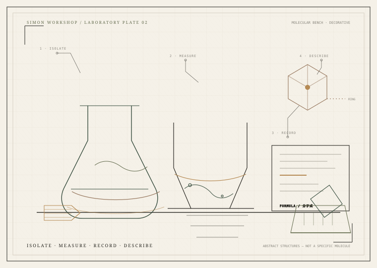

CHAPTER 02 · MOLECULES / 结构与气味
芳香分子Molecules & Materials
结构、CAS 号、分子量、气味阈值、天然存在与调香角色。结构图来自 PubChem 的二维记录；它是识别工具，不是“气味公式”。这里也把化学物质与商业商品名分开记录。
化学类别存在交叉，不能强行划分为互不相交的集合。结构图来自 PubChem 对应 CID 的二维记录，可能对应单一异构体或特定记录；商品混合物可能不同。
COMMERCIAL INGREDIENTS / 商品层
商品名、化学物质、供应商规格，是三件事 TRADE
这里记录具有商业意义的调香原料。商品名不能被当作化学唯一名称；同一商品也可能有不同供应商、纯度、异构体与规格。
不提供供应商报价、未公开配方或自行调香的安全用量。实际规格须以供应商当前 TDS/SDS 与最新法规为准。

FIELD NOTE / 自绘视觉笔记
结构是识别的起点，不是气味的答案
这张工作台装饰图把“分离、测量、记录、描述”放在同一个画面里。抽象环状结构只是视觉符号，不是某个具体分子的精确结构式。
全部插画由项目内 SVG 绘制；没有使用 AI 生成的假植物照片、假文物或伪造化学结构。
一个分子可以贡献气味，但不能独自代表一朵花、一块木头或一瓶香水。
香谱同时显示“代表分子”与“天然原料”的关系，但不会说“玫瑰 = 香叶醇”。天然原料含有数百种挥发物与微量成分，提取方式、品种与产地都会改变结果；分子也不一定只在一种气味语境里出现。
本页的“气味阈值”与“蒸气压”多为定性描述或未录入。具体数值需说明介质、方法、纯度与温度，不能把一个数字当成普适常数。